Voici un chantier complet, photographié à chaque étape : la machine planétaire qui met le bois à nu, les angles repris à la main, l'aspiration qui capte la sciure, puis les trois couches de Bona Mega Evo. Rien n'est mis en scène — c'est le déroulé réel d'un appartement parisien.
~20 m²poncés par jour
3couches Bona Mega Evo
8 havant de réintégrer
Le chantier en trois images
Un parquet haussmannien — avant, pendant, après
La même pièce, photographiée à trois moments. C'est le résumé le plus honnête de ce que je fais.
Avant / Après
Tout est dans cette image
À droite : le parquet tel que je l'ai trouvé — chêne noirci par des décennies de vernis, taches, lames marquées. À gauche : le même bois, après le passage de la machine. La machine planétaire HTC 420 VS et l'aspirateur Festool CTL 48 E sont au premier plan. Aucune retouche, aucun décor : c'est la limite réelle entre l'avant et l'après.
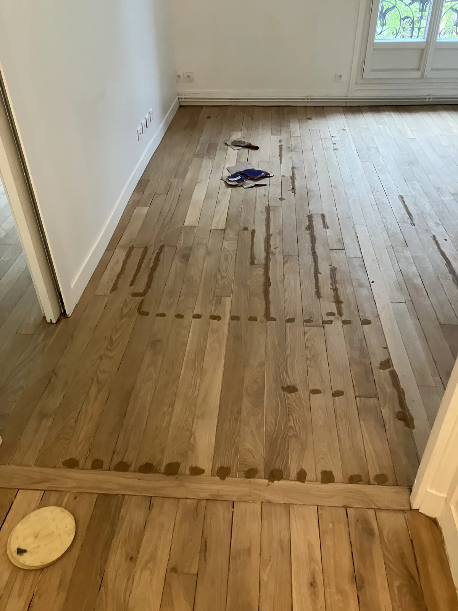
toujours avant la vitrification, jamais après. Une fois le vernis passé, ces réparations deviennent invisibles." loading="lazy" style="width:100%;height:auto;display:block">
Réparations
L'étape que personne ne montre
Le parquet est poncé, mais pas encore vitrifié. On voit les points sombres de pâte à bois Sintobois : trous de clous, fissures, joints trop larges rebouchés un par un. Cette résine bi-composant est teintable et souple — elle ne fissure pas quand le bois travaille. Le rebouchage se fait toujours avant la vitrification, jamais après. Une fois le vernis passé, ces réparations deviennent invisibles.
Résultat
La même pièce, une fois vitrifiée
Trois couches de Bona Mega Evo, égrenage entre la première et la deuxième. Le chêne massif haussmannien a retrouvé sa couleur naturelle — le vernis à base aqueuse ne jaunit pas. Comparez avec la première photo : c'est le même parquet, le même bois, la même pièce.
Étape 1
Le ponçage — la machine planétaire
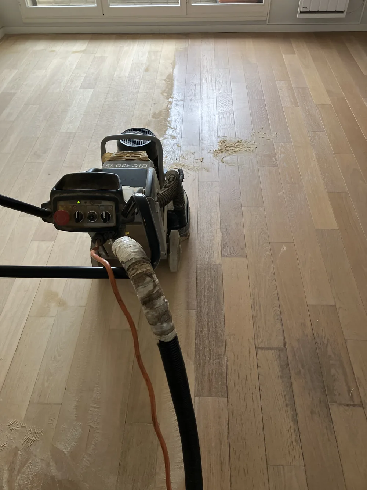
1La limite entre l'avant et l'après
À droite, le parquet tel qu'il était : vernis usé, teinte foncée, taches. À gauche, le même bois après un seul passage de la machine. Cette ligne de séparation, c'est tout le métier en une image.
La HTC 420 VS est une machine planétaire : ses disques tournent dans toutes les directions à la fois. C'est ce qui permet de poncer un parquet sans laisser la moindre marque directionnelle — indispensable sur les motifs diagonaux comme le point de Hongrie, où une ponceuse à tambour laisserait des sillons irréparables.
Vidéo
La machine planétaire en action
20 secondes de ponçage réel. On voit le bois nu apparaître derrière la machine, et la sciure aspirée à la source.
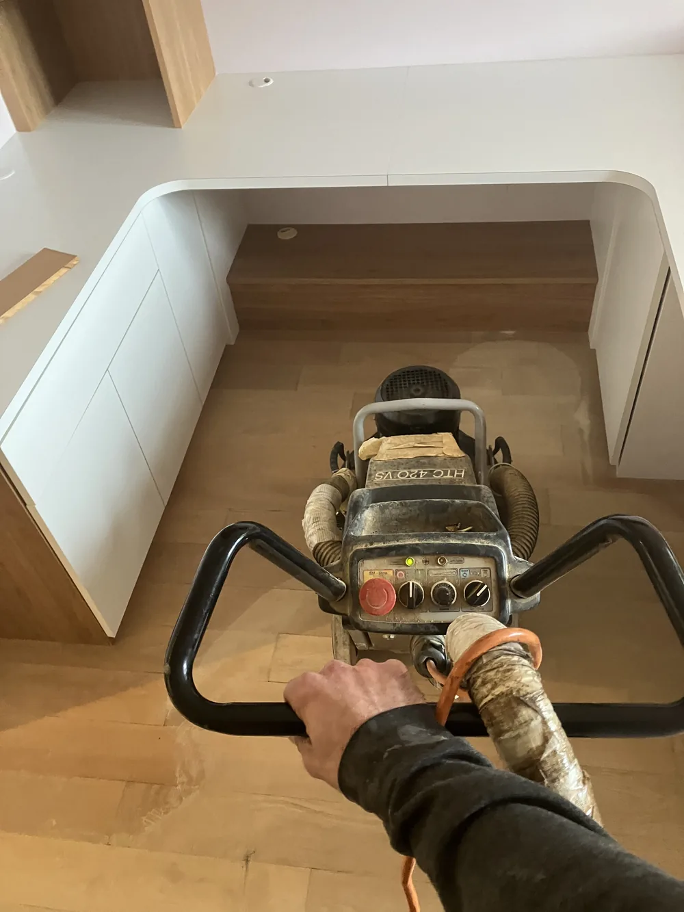
2Sous les meubles aussi
Le ponçage ne s'arrête pas au milieu de la pièce. Sous les meubles de cuisine, contre les plinthes, dans les recoins — la machine va aussi loin que sa taille le permet.
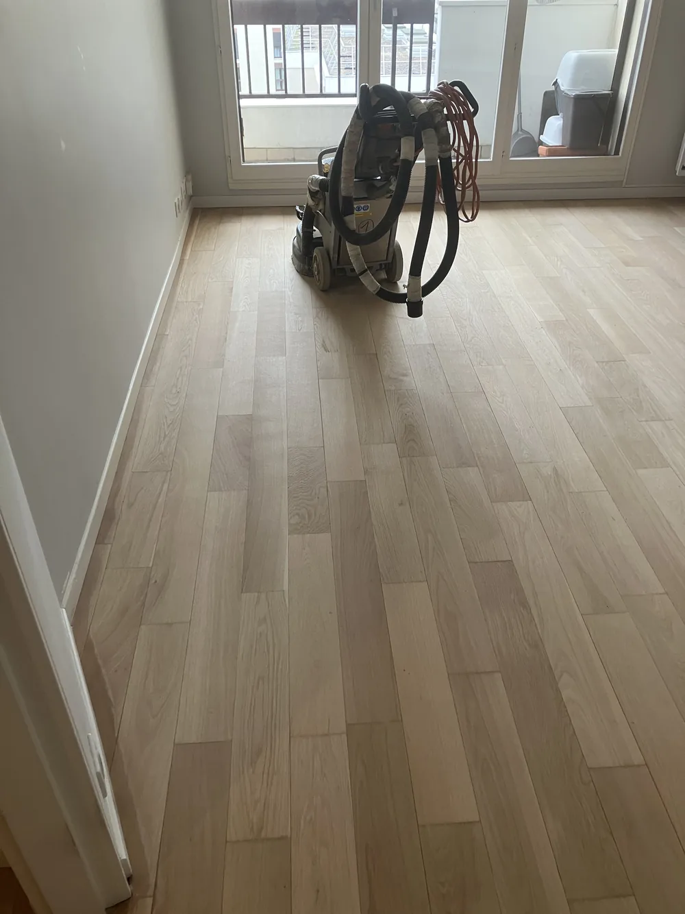
3La pièce reprend sa couleur
Le chêne débarrassé de son ancien vernis retrouve sa teinte naturelle, claire et mate. C'est souvent à ce moment que le client comprend ce qu'il avait sous les pieds.
Étape 2
Les zones que la machine n'atteint pas
C'est le travail le plus long — et celui qui sépare un ponçage soigné d'un ponçage bâclé.
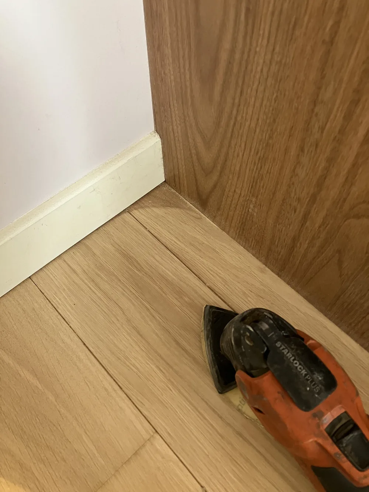
4Les angles, à la ponceuse oscillante
Aucune machine planétaire n'entre dans un angle. Chaque coin, chaque pied de plinthe est repris à la ponceuse oscillante, à genoux. C'est lent, mais c'est là que le résultat se joue : un angle mal poncé reste visible à vie sous le vernis.
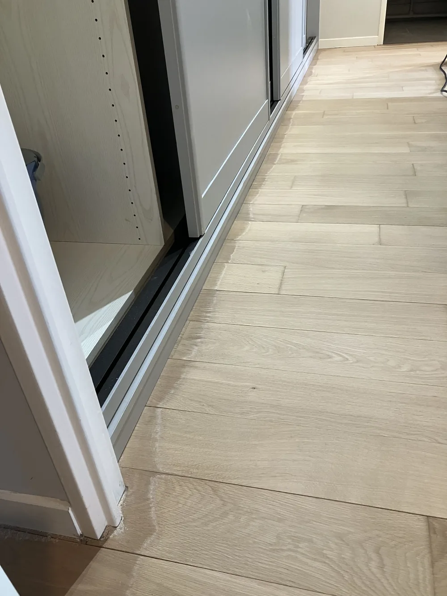
5Jusqu'au rail du placard
Le parquet est poncé au ras du rail du placard coulissant. On ne laisse pas de bande sombre le long des seuils.
Étape 3
La finition et la poussière
Vidéo
La monobrosse — la passe de finition
Après la machine planétaire, la monobrosse affine la surface et uniformise le grain. Elle sert aussi à l'égrenage entre la 1ère et la 2ème couche de vernis.
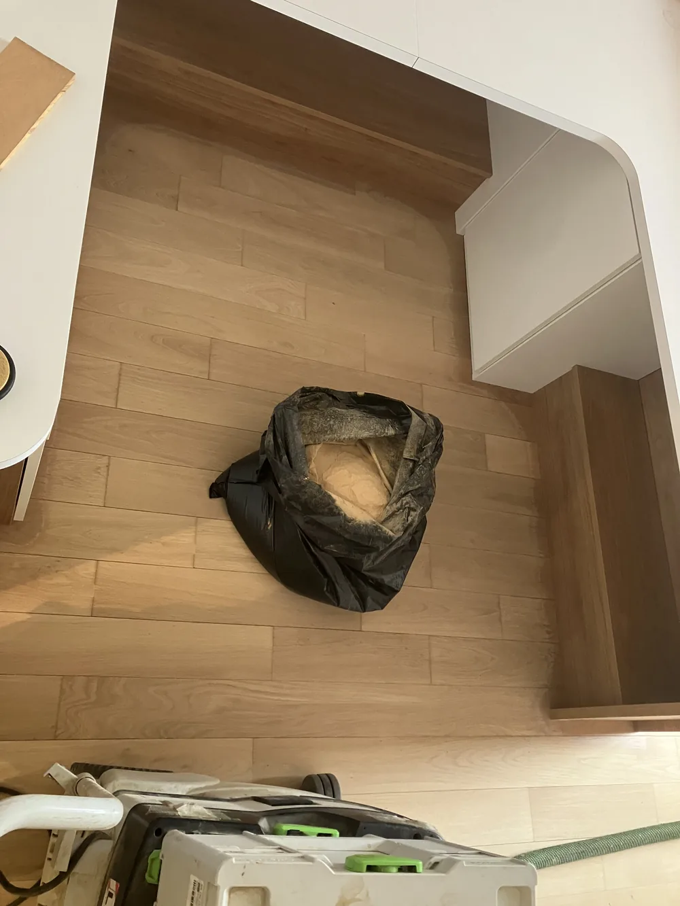
6Où va la poussière
Voilà ce qui aurait fini sur les murs, les meubles et chez les voisins. L'aspirateur Festool à filtre HEPA capte la sciure directement à la sortie de la machine. Le chantier reste propre — c'est la première chose que les clients remarquent.
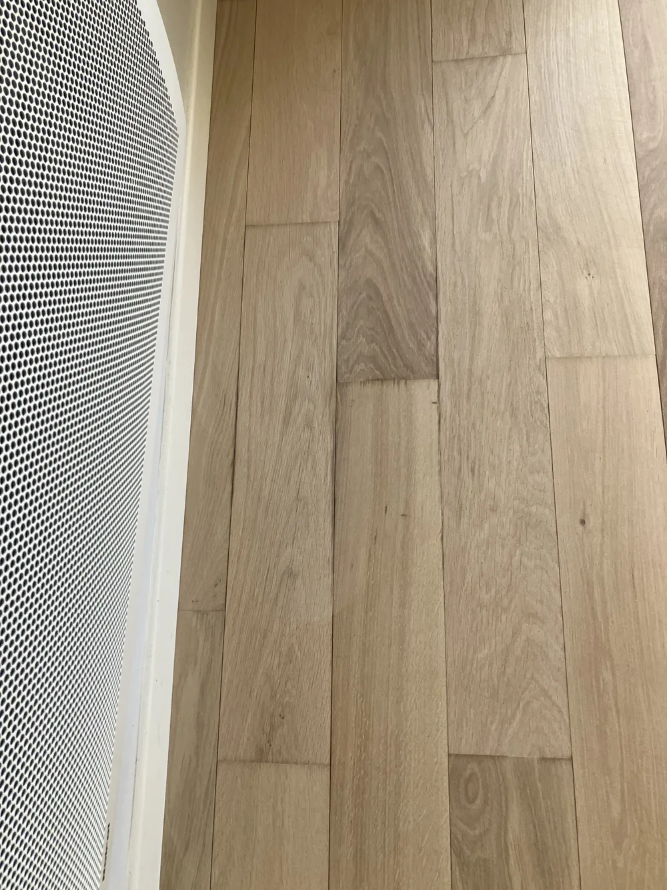
7Le veinage retrouvé
Gros plan sur le bois nu : chaque lame a son dessin, ses nœuds, ses variations de teinte. C'est ce que 150 ans de vernis et de cire avaient fini par masquer.
Étape 4
La vitrification — 3 couches de Bona Mega Evo
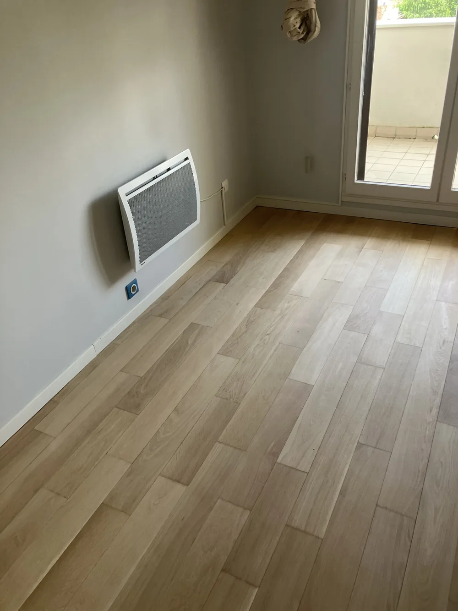
8Le parquet prêt à recevoir le vernis
Bois nu, dépoussiéré, uniforme. C'est l'état dans lequel un parquet doit être avant la première couche — pas avant.
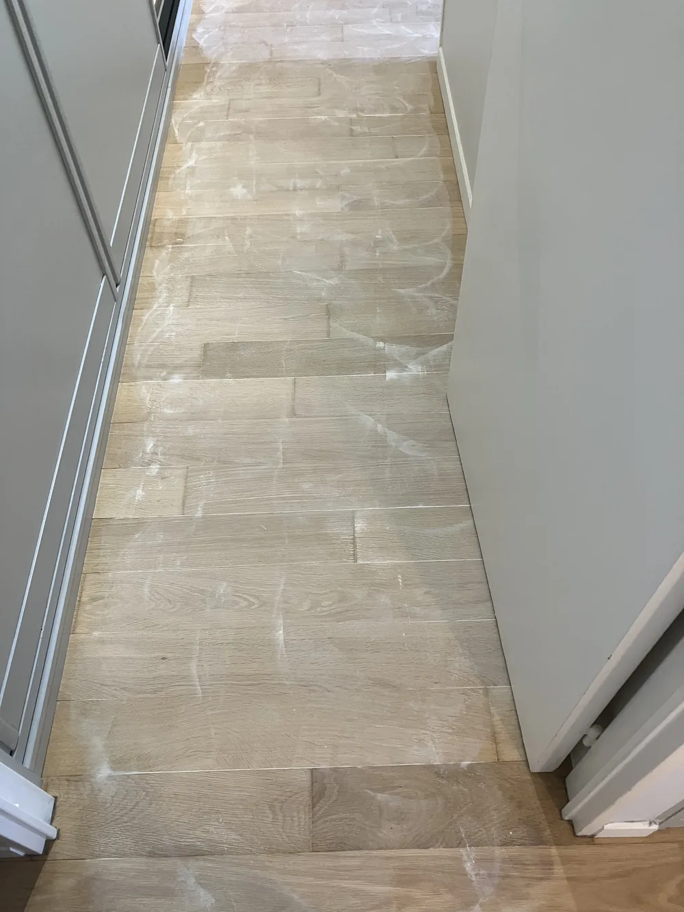
9L'application, en bandes régulières
Le vernis est appliqué au spalter, en bandes qui se recouvrent légèrement. On ne s'arrête jamais au milieu d'une lame : c'est ce qui évite les raccords visibles une fois sec.
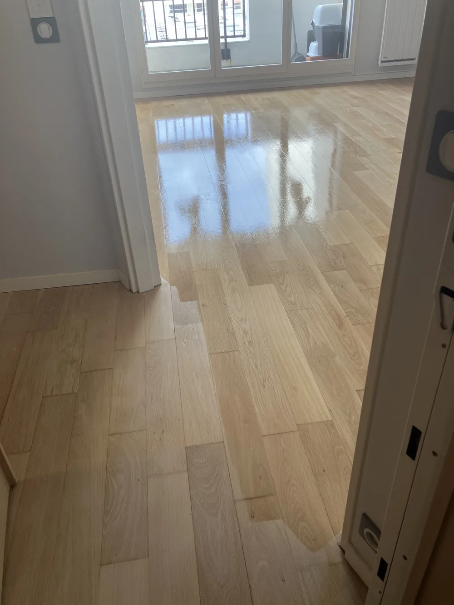
10Le vernis frais
Brillant et miroitant à l'application, le Bona Mega Evo mate en séchant selon la finition choisie — mat, satiné ou brillant. Séchage en surface : 2 heures.
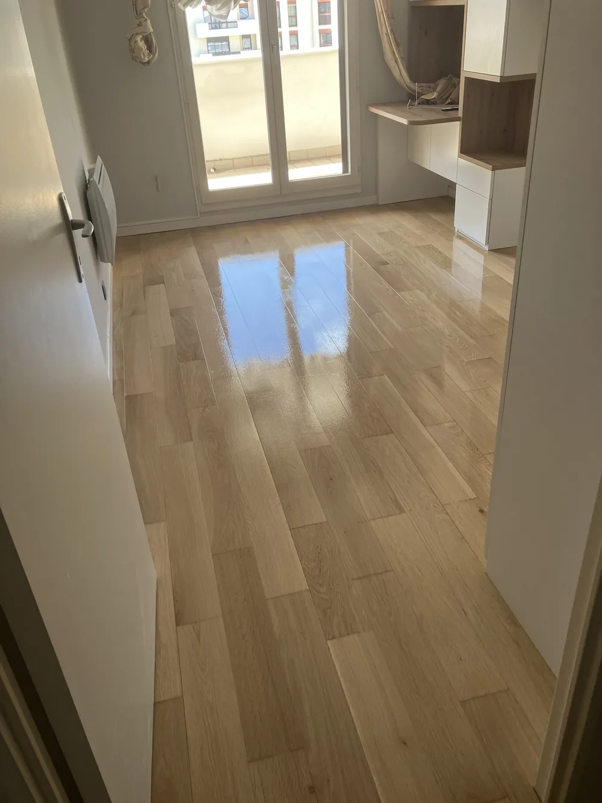
11Le résultat
Trois couches, égrenage entre la première et la deuxième. Réintégration 8 heures après la dernière couche. Durée de vie : 10 à 15 ans.
Questions fréquentes
Vos questions sur le déroulé
Environ 20 m² par jour. Pour un 60 m², comptez 3 à 4 jours, vitrification 3 couches comprise. Réintégration 8 heures après la dernière couche.
Très peu. L'aspirateur Festool à filtre HEPA capte la sciure à la source (voir la photo du sac). Il reste des particules ultrafines qui se déposent dans un rayon de 2 à 3 mètres, mais l'appartement reste propre.
À la ponceuse oscillante, à la main. La machine planétaire n'entre pas dans les angles ni au pied des plinthes. C'est le travail le plus long — et celui qui distingue un ponçage soigné.
Elle affine la surface et uniformise le grain avant la vitrification. Elle sert aussi à l'égrenage entre la 1ère et la 2ème couche de vernis.